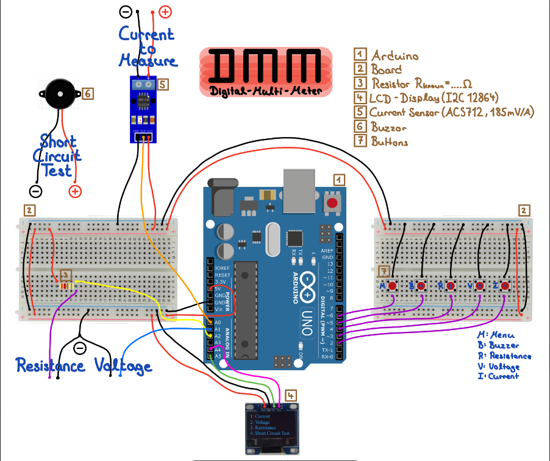

Resume
Contact
Name: CHEN Tai Min
Date of Birth: 00th March 0000
Tel: 1234-5678
Email: 12345678d@conecy.polyk
Address:
Nationality:
Education
- High School
- Electrical Engineering, The Hong Kong Polytechnic University, Kowloon, Hong Kong (08/2020 -
present)
- Current overall GPA: 3.56
- Relevant courses studied –
- ENG2002 COMPUTER PROGRAMMING B+
- EE2001A APPLIED ELECTROMAGNETICS A+
- EE2002A CIRCUIT ANALYSIS A+
- EE2003A ELECTRONICS A
Skills
- Fluent in English, Mandarin, and Cantonese
- Basic communication skills in Japanese and Korean
- Acquainted with C++, MATLAB, and Python programming language
- Basic knowledge of PSIM, AutoCAD, and SOLIDWORKS
- Able to build practical objects with Arduino
- Knows how to analyze basic circuits
- Basic knowledge of signal processing, power electronics, and system controls
Academic projects
-
- Leader of the team
- Under given equipment like sensors, buttons, and monitors, we were told to build a digital
multimeter with multiple functions
- We came up with a digital multimeter with voltage, current, and resistor measurement,
which had an auto-scaling function and high accuracy

-
Self-learning Project - Data analysis by Machine Learning: 2021
- Self-learning Machine learning on “Codecademy”
- By using external Machine Learning functions for Python, I analyzed dating website users’
preferences and tried to match him/her with one another automatically.
-
Computer Programming Project - Application development: 2021
- By using C++, we build a login system that enabled users to log in or register their accounts,
and a password-finding function
- After login, multiple math calculation functions such as arctangent and dot product are
shown to be chosen by users.
-
Operation Management Project - TESLA operation analysis: 2021
- By using different methods such as forecasting and quality management, we analyzed the
sales trend of TESLA in previous times and predicted future development.
- Using facility layout and plant location methods, we comment on the quality of TESLA stores
and gave further suggestions to improve the current environment in TESLA stores
-
Entrepreneurship Project - Smart Home Hub: 2020
- By brainstorming with groupmates, we came up with an idea to develop a system that can
integrate most of the smart home devices.
- Analyzed the business idea through various criteria such as cost, profit, and promising
market, etc.
Commmunity Service
-
Environment cleaning volunteer: 2018
- Voluntarily wrote a proposal to the city government asking for funding to help us clean
beaches and mountains on islands close to Taiwan.
-
Junior students teaching volunteer: 2018
- Prepared different math and logic games to teach junior high school students, which helped
them find out the fun of math
-
Student service team: 2017
- A student team that helped the school to supervise whether students violated the school
rules such as improper uniform style and skipping classes
Achievements and Extracurricular Activities
-
PolyU Taiwanese Student Association President: 2021 – present
- Promote Taiwanese culture to all students, teachers, and staff
- Organizing 5 committee members to hold events for over 100 normal members
- Being responsible for representing the association to communicate with the university and
other organizations to pursue benefits for our members
-
PolyU Campus Life Festival: 2022
- Setting up a booth for promoting the association and recruiting members
-
Taiwanese Style Halloween Party: 2021
- Holding a night party for participants to experience a Taiwanese-style Halloween party
-
Taipei City Government Excellence Award – Mayer’s award (Top award): 2020
- After studying in high school for 3 years, the award was given to those who behaved well in
both study and daily life
-
World Vision 30 Hour Famine: 2019
- Experience life without consumption which is the same situation as people in poverty that
didn’t have food
- After the event, I had a greater recognition of how precious food is and donated money to
World Vision as much as I could and hope the existing problem can be improved
-
Korean Culture Study Club: 2018-2019
- Lacking a medium to share our interest in Korean culture, my friends and I decided to
establish the club in our high schoo
- The club aimed to discuss and promote K-pop and traditional Korean culture